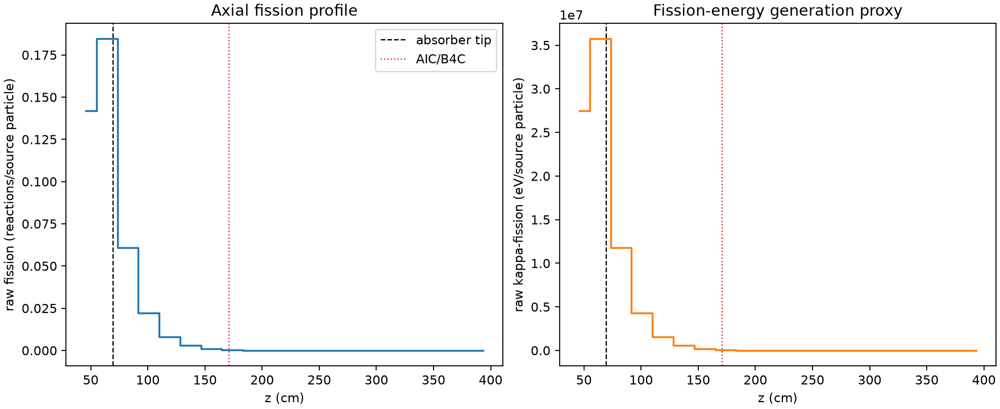
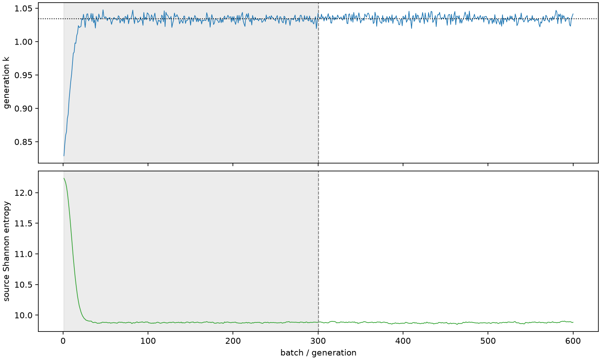

| field | value |
|---|---|
| experiment | V2-STAGE_128_OGRENCI_02-0019 |
| k | 1.0344519401880998 |
| MC standard error | 0.0001977808394503318 |
| seconds | 917.4025557349996 |
| acceptance | not_assessed |
| convergence | review_required |
Completed is output integrity only; physical and statistical review required. Zero tallies do not prove zero production or zero uncertainty.
| diagnostic | value |
|---|---|
| geometric fuel voxels | 5280 |
| zero fission tally voxels | 1681 |
| low signal fuel voxels | 2913 |
| low signal fission share | 0.00011579567984707967 |
| low signal kappa share | 0.00011583904653374857 |
| important fission share | 0.9500599497516354 |
| previous filter included | 2367 |
| duration estimate s | 1562.5173488400023 |
| actual minus estimate s | -645.1147931050027 |
| fission relative MC error | statistics |
|---|---|
| all_geometric_fuel | {"voxels": 5280, "positive_mean_voxels": 3599, "zero_mean_voxels": 1681, "undefined_relative_error_voxels": 1681, "median": 0.0534059989860252, "p95": 0.9882187112807639, "maximum": 1.0000000000000002} |
| low_signal | {"voxels": 2913, "positive_mean_voxels": 1232, "zero_mean_voxels": 1681, "undefined_relative_error_voxels": 1681, "median": 0.5902532644278995, "p95": 1.0, "maximum": 1.0000000000000002} |
| important_95pct | {"voxels": 940, "positive_mean_voxels": 940, "zero_mean_voxels": 0, "undefined_relative_error_voxels": 0, "median": 0.004736470488104839, "p95": 0.0110564663264422, "maximum": 0.012238430464205734} |
| outside_previous_filter | {"voxels": 2913, "positive_mean_voxels": 1232, "zero_mean_voxels": 1681, "undefined_relative_error_voxels": 1681, "median": 0.5902532644278995, "p95": 1.0, "maximum": 1.0000000000000002} |
| kappa_fission relative MC error | statistics |
|---|---|
| all_geometric_fuel | {"voxels": 5280, "positive_mean_voxels": 3599, "zero_mean_voxels": 1681, "undefined_relative_error_voxels": 1681, "median": 0.05333563612684458, "p95": 0.9881869687216693, "maximum": 1.0000000000000002} |
| low_signal | {"voxels": 2913, "positive_mean_voxels": 1232, "zero_mean_voxels": 1681, "undefined_relative_error_voxels": 1681, "median": 0.5893715667704833, "p95": 1.0, "maximum": 1.0000000000000002} |
| important_95pct | {"voxels": 940, "positive_mean_voxels": 940, "zero_mean_voxels": 0, "undefined_relative_error_voxels": 0, "median": 0.004730159253615715, "p95": 0.011039017714288415, "maximum": 0.012221682915025652} |
| outside_previous_filter | {"voxels": 2913, "positive_mean_voxels": 1232, "zero_mean_voxels": 1681, "undefined_relative_error_voxels": 1681, "median": 0.5893715667704833, "p95": 1.0, "maximum": 1.0000000000000002} |
| axial bin | fission share | kappa-fission share |
|---|---|---|
| 1 | 0.336016151908159 | 0.3359950080151097 |
| 2 | 0.4372303955286537 | 0.43719979622220045 |
| 3 | 0.14452443996988645 | 0.14455680187158107 |
| 4 | 0.05252616381418457 | 0.05253842456407474 |
| 5 | 0.019091864385963598 | 0.019096451995404842 |
| 6 | 0.006966367008737821 | 0.006967941624316512 |
| 7 | 0.0024877441007784724 | 0.0024883556950303968 |
| 8 | 0.0008134758589514112 | 0.0008137044156492135 |
| 9 | 0.00023519300771654967 | 0.00023527180052546813 |
| 10 | 7.784634523507866e-05 | 7.787465745161646e-05 |
| 11 | 2.0881365072213188e-05 | 2.089150371804576e-05 |
| 12 | 6.8762529925584415e-06 | 6.876945054569054e-06 |
| 13 | 1.9426144571331765e-06 | 1.9427667464139252e-06 |
| 14 | 5.50156847540522e-07 | 5.50230167727454e-07 |
| 15 | 3.9783135829074115e-08 | 3.9886546853554975e-08 |
| 16 | 6.789922797516757e-08 | 6.780642221853455e-08 |
| 17 | 0.0 | 0.0 |
| 18 | 0.0 | 0.0 |
| 19 | 0.0 | 0.0 |
| 20 | 0.0 | 0.0 |
Histories include the inactive-to-active transition at batch 300. kappa-fission approximates fission energy production, not total heat deposition.

